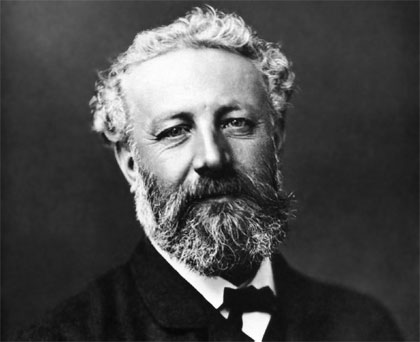

Pregunta Verdadero-Falso
Biografía de Julio Verne

Nombre completo: Jules Gabriel Verne
Lugar de nacimiento: Nantes, Francia
Fecha de nacimiento: 8 de febrero de 1828
Murió: 24 de marzo de 1905
Géneros literarios: Ciencia Ficción / Aventuras
Libros más destacados: 20.000 Leguas de Viaje Submarino, Alrededor de la Luna, Cinco Semanas En Globo, De la Tierra a la Luna, El Faro del Fin del Mundo, La Isla Misteriosa, La Vuelta al Mundo en 80 Días, Los Hijos del Capitán Grant, Miguel Strogoff, Viaje al Centro de la Tierra, más resúmenes...
Fue el mayor de los cinco hijos que tuvo el matrimonio formado por Pierre Verne, que procedía de una familia vinculada a la jurisprudencia (su abuelo fue consejero notario de Luis XV y presidente del Colegio de Abogados de Nantes), y de Sophie Allotte de la Fuÿe, perteneciente a una familia de militares.
En 1847 comenzó sus estudios de derecho en París y se recibió de abogado en 1849, razón por la cual su padre le permite permanecer en París. Mientras tanto seguiría escribiendo teatro. A pesar de los deseos de su padre que quiso que se dedicara a su carrera de abogacía y ante la amenaza de quitarle el financiamiento, Verne sigue sin estar interesado en seguir esa la labor. Y ya sin el financiamiento de su padre, gasta todos sus ahorros en libros y se pasa largas horas en las bibliotecas de París queriendo saberlo todo: estudiando geología, ingeniería y astronomía, conocimientos con los que más adelante documentaría sus fantásticas aventuras y predijera con asombrosa exactitud muchos de los logros científicos del siglo XX. Hablaría de cohetes espaciales, submarinos, helicópteros, aire acondicionado, misiles dirigidos e imágenes en movimiento, mucho antes de que aparecieran estos inventos.
Recién en 1869 publicaría su primera novela "Cinco semanas en Globo", un éxito fulminante, gracias al cual firmó un espléndido contrato con el editor P. J. Hetzel, que le garantizaría la cantidad anual de 20.000 francos durante los siguientes veinte años, a cambio de lo cual, se obligaría a escribir dos novelas de un nuevo estilo cada año. Luego le siguieron otras novelas a la gran producción del autor: "Viaje al centro de la tierra"(1864), "De la tierra a la luna"(1865), y "20,000 Leguas de viaje submarino"(1870). La última novela antes de su muerte fue "La invasión del mar".
Célebre por sus relatos de aventuras fantásticas, narradas siempre con un tono de verosimilitud científica, en las que describe, con una visión casi profética, multitud de logros científicos, inventos y descubrimientos posteriores a su época.
Fue considerado el precursor de un género literario nuevo, la ciencia ficción.
Falleció en 1905 en la ciudad de Amines.
Tomado de: http://www.elresumen.com/biografias/julio_verne.htm
Retroalimentación
Verdadero
Retroalimentación
Falso
Retroalimentación
Falso
Retroalimentación
Falso
Retroalimentación
Verdadero
Retroalimentación
Verdadero